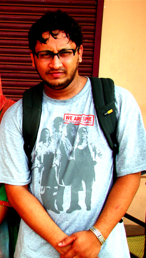

Batch - 5
Cochin University of Science and Technology, Cochin - 682022.
Online Presence
Siddharth Joshi is a student of 9th semester of 5 years Integrated MSc course in Photonics in CELOS. He joined CELOS in the 5th batch of the Integrated M.Sc. course in 2006 and is expected to complete the course in 2011. His The area of interest are Silicon Photonics, Biophotonics, Nano-photonics, Quantum Optics, Optoelectronics and Nano Technology.
List of Seminars taken by Siddharth as part of his course curriculum is as follows:
 | Semester 8- The power of Coherent Anti-Stokes Raman Scattering |
| Semester 7- Photodynamic Therapy - Healing with Light |
| Semester 6- Speckle Metrology for Aerospace Components (Project Presentation) |
| Semester 5- Quantum Dots and Quantum-Well Heterostructures |
| Semester 4- Wireless Technologies |
| Semester 3- Introduction to Carbon Nanotubes |
| Semester 2- Detection Techniques of Sub-atomic Particle |
He secured a position in top 2% students in the 6th National IT Aptitude Test (NITAT) conducted by NIIT and his All India rank was 831 against 73000 participants.
As a part of the bachelors thesis and the VI semester course mini-project he performed studies on Aerospace components using speckle metrology, with the project titled "Detection of Surface Roughness Properties on the Basis of Speckle Photography and other Speckle Metrology Techniques" under Dr. A Mujeeb.
Siddharth is a student member of the International Society for Optical Engineering (SPIE), Optical Society of America (OSA) and joint- secretory of IEEE Photonics ISP Chapter. He has been a volunteer and participant in many national and international academic conferences like Indo-UK Workshop 2008 at International School of Photonics, Annual Photonics Workshop etc.
Siddharth keeps himself involved in many other extracurricular activities and had won several national level competitions. He secured 1st position in CREDENCE 2008 which is a national level print-ad competition. He also got awarded as the best web designer for the student chapter website competition organized by SPIE at San Diego, where his design won the 2nd prize with over 84 competitors from around the world. He also takes part in several local events that are organized in the university and had won several prizes.
Apart from the academics his other interests are Philosophy, Film-making, Travelling etc. His native town is Sitapur, Uttar Pradesh.